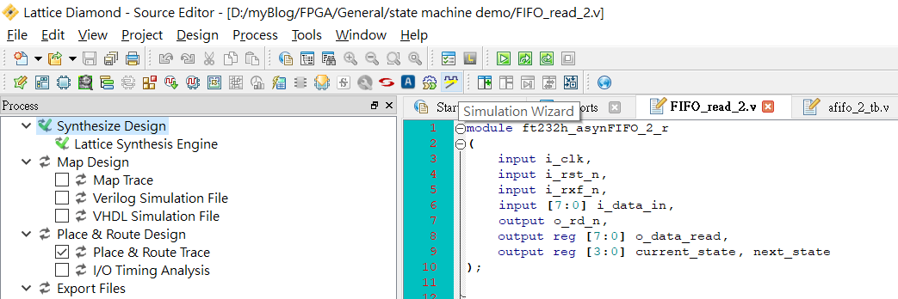
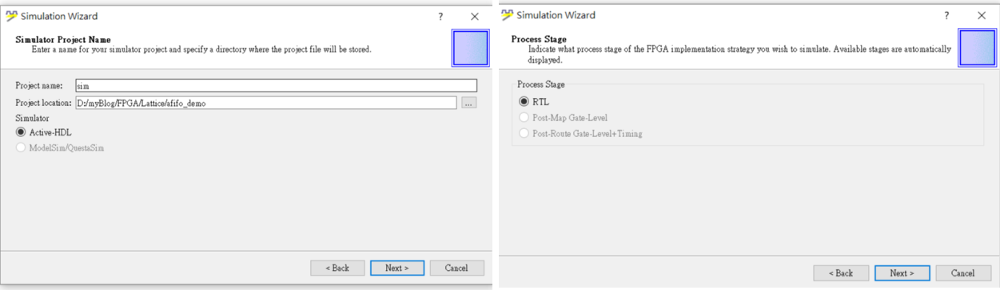
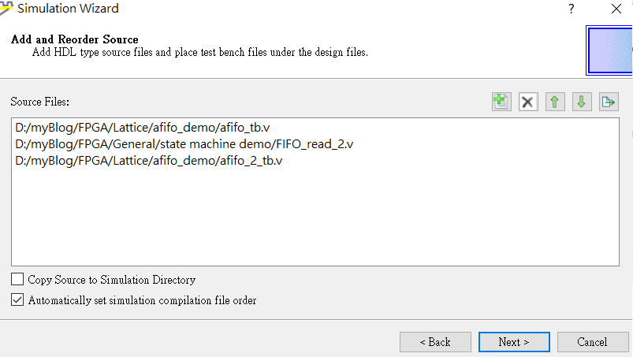
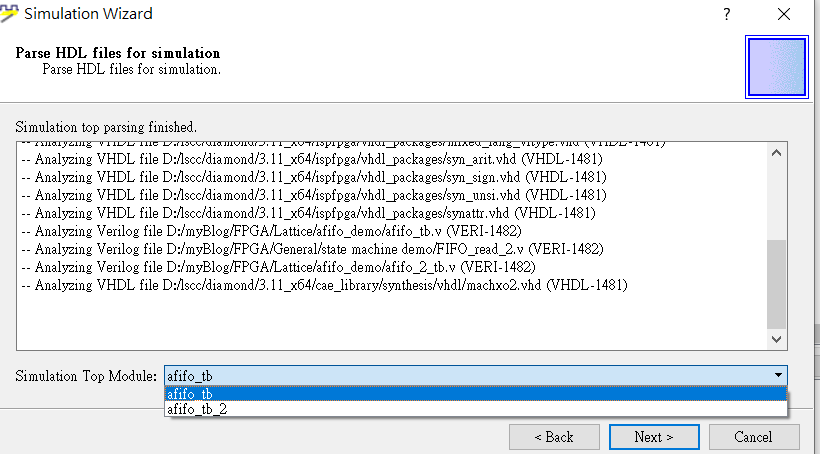
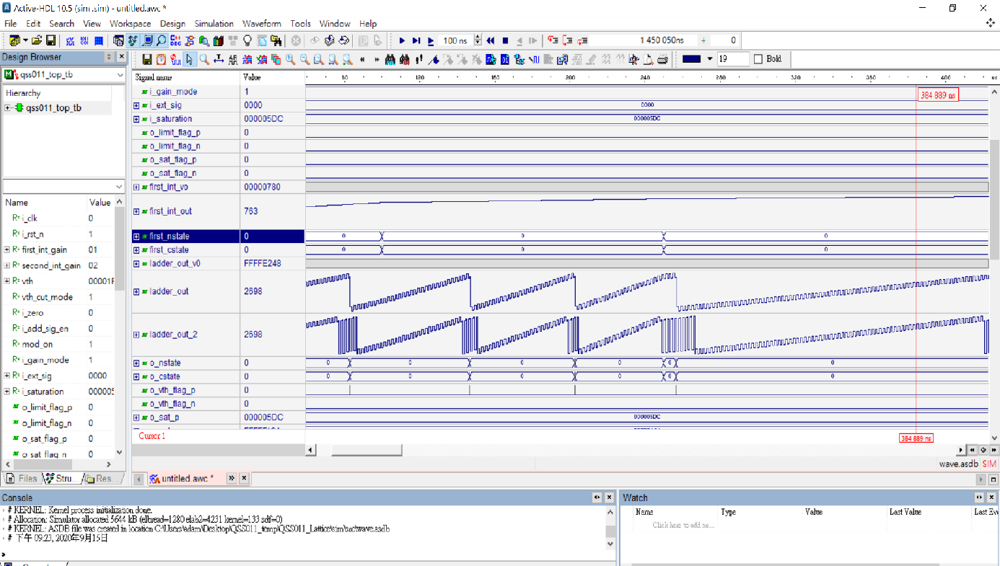
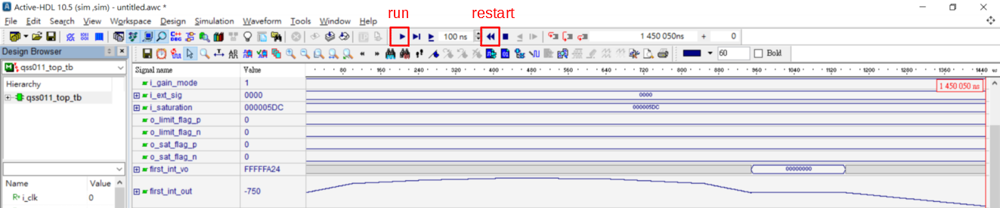

當開發完Verilog程式碼時跑個模擬來測試波形這個步驟是不可缺的，
我用過的三大FPGA開發工具幾乎都有自己的模擬軟體，Lattice Diamond使用的是Active-HDL這家的。
首先將verilog程式碼與測試用的testbench檔案編譯好後按下工具列上方的simulation wizard:

輸入project name後會在目前fpga專案資料夾下產生一個simulation的資料夾，所有跟simulation相關的檔案都會丟到裡面。
接著按下一頁後會跳出process stage這個頁面，RTL選項代表只針對你寫的verilog邏輯去做模擬，不考慮訊號實際在跑時會造成的延遲問題。
在Lattice FPGA我還沒跑過RTL以外的模擬，只有在Quartus Modelsim有跑過，將來若有機會跑到會再更新做法。
不過現在通常我也只會跑RTL simulation，因為這個跑起來最快而且邏輯若沒有錯有很高的機率上晶片後也不會錯，
如果有問題再用邏輯分析儀除錯就好。

然後下一頁會把你目前的source file列出來，可以在這裡做新增或刪除。

再下一頁會讓你選擇這次模擬要使用的testbench top module。

接著下一頁後就會看到summary，然後模擬圖就會跑出來了。
跑出來的模擬圖像下面一樣，可以針對有興趣的訊號以analog訊號做圖顯示方便觀察，只要在訊號欄
位上面按右鍵選擇properties，進去後在display tab下的Buses區塊選擇Analog，可以自己輸入顯示
範圍或讓程式偵測。繪圖範圍太小的話也可以在Height處改變數值。

常常在寫程式時都不會一次到位，會一邊跑模擬一邊修正程式碼。當程式碼或是testbench有更動要
重新跑模擬時，只要按下工具列上方的restart simulation，然後再按下run，就會幫你重新編譯看
看有沒有錯誤，若沒有錯誤的話再按一次run就會跑出更新後的波形了!
